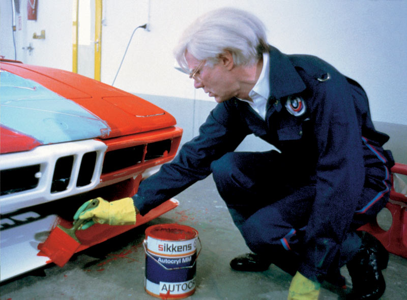
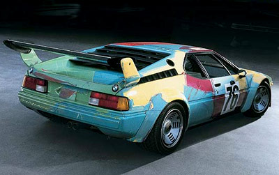
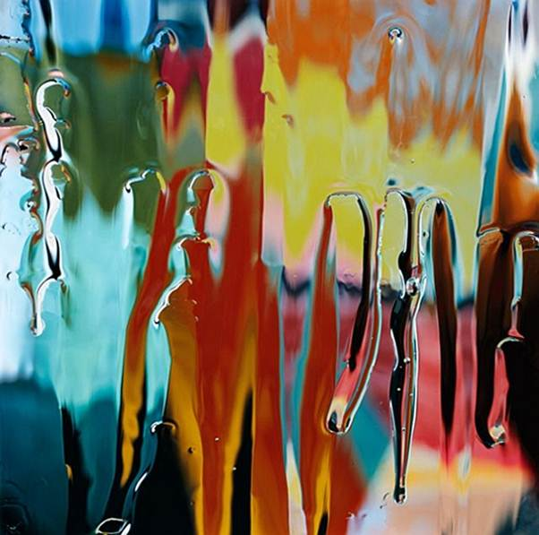
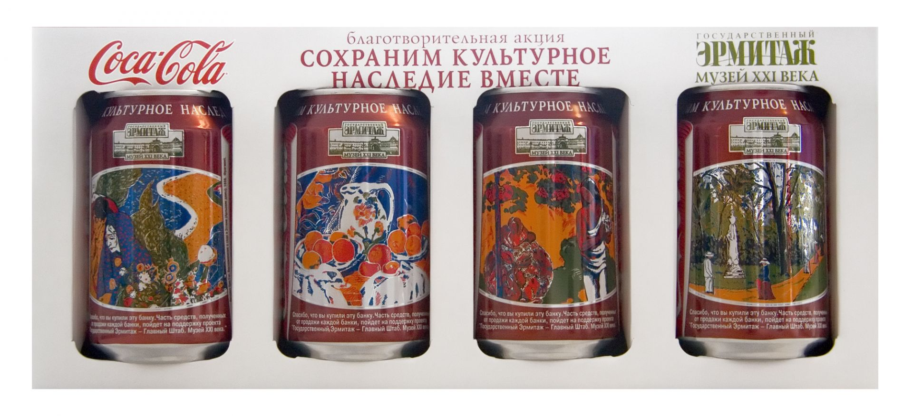

Об искусстве
Искусство способно помочь создать сильный бренд
Логотип леденцов Chupa-Chups был разработан и нарисован в 1969 году Сальвадором Дали.
В современных условиях занятости рынков, высокой конкуренции, обширного предложения на помощь бизнесу приходит креативный подход. Культура может многое дать бизнесу, ведь бизнес – это не только деньги. Сегодня большая часть цены платится за нематериальные активы, например, за бренд.
Брендинг – это набор универсальных приемов построения структуры для любого успешного начинания. Он объединяет коммерцию и культуру в единое целое, обладающее потенциальной силой для обеспечения процветания. Брендинг сочетает прогрессивные приемы управления знаниями (о чем свидетельствует опыт наиболее успешных брендов) с методами управления сверхчувствительной сферой кросскультурных связей (что подтверждается примерами коммуникаций, осуществляемых на мировом уровне самыми известными брендами).
В 1997 году журнал Fortune Magazine писал «В XXI веке брендинг станет в конечном счете единственным фактором дифференциации компаний. Отныне ценность бренда является его активом, имеющим ключевое значение». [Fortune Magazine 1997]
И действительно, технологии брендинга применяются сегодня не только для продвижения товаров широкого потребления, но и в деятельности политических партий, негосударственных организаций, в шоу-бизнесе, областях промышленного производства и бизнеса для бизнеса, а так же в геополитике для создания и продвижения бренда страны, региона или города.
Patrick Marketing Group в своем недавнем исследовании эффективности торговых марок показала, что 96% топ-менеджеров считают задачу создания бренда исключительно важной для будущего успеха компании. Исследование инвестиций в формирование бренда, выполненное Mercer, позволило установить, что, по мнению 84% респондентов, их внимание к вопросам формирования бренда в последние 2-3 года значительно повысилось. По мнению Mercer двумя основными причинами этого являются:
- сближение потребительских свойств товаров
- обострение конкуренции.
Бренды как активы предприятия
«Сильные бренды предоставляют предприятию огромные преимущества, т.к. они формируют группы лояльных покупателей, которые снова и снова приобретают товар. Выгоды из этого заключаются в том, что денежные потоки становятся прогнозируемыми, а процессы планирования бизнеса и управления им приобретают более надежные основания. Бренды как средство приумножения доходов могут быть отнесены в категории производственных активов точно так же, как и другие виды активов (здания, оборудование, денежные средства, капиталовложения …)»[Т Блаккет, «Что такое бренд?», Profile Books Ltd, 2003]
Очевидно, что креативный подход, культура играют здесь решающую роль. Если обратиться к ведущим мировым брендам, все они используют искусство для формирования положительного образа.
Позиция западного бизнеса — Искусство способно помочь создать сильный бренд.
Автомобильная коллекция BMW
С 1975 года компания регулярно приглашает художников создать свой авторский автомобиль.
Позиционирование бренда строится либо на выгодах (benefits) либо на эмоциях (emotions). Неудивительно, что в автомобильной отрасли, где позиционирование всегда основано на эмоциях, используется искусство.


Энди Уорхолл (1975): «Я пытался изобразить скорость наглядно. Когда автомобиль движется очень быстро, все линии и цвета размыты».
Коллекция искусства компании Microsoft
Многие компании используют искусство для развития корпоративной культуры своих сотрудников, так к примеру задача коллекции искусства компании Microsoft: создать творческую атмосферу, стимулирующую креативность и инновации, демонстрируя произведения искусства которые:
- Отражают стандарты креативности и инноваций характерные для Microsoft.
- Представляют очень многообразное и глобальное сообщество сотрудников компании и наших потребителей.
- Делают рабочую атмосферу более человечной и деятельной.
Коллекция ведет свою историю с 1987 года, когда в компании было всего 2 000 сотрудников, и она занимала 6 зданий. Сегодня коллекция включает в себя 5 000 произведений искусства и показывается в 180 зданиях компаниипо всему миру.
Коллекция включает произведения современного искусства (живопись, скульптуру, графику, фотографии , мультимедиа работы) и призвана радовать сотрудников, клиентов и гостей компании.

Bean Finneran Chartreuse Cone, 1997 Ceramic with glaze
Совместная программа Государственного Эрмитажа и компании «Кока-Кола»

В рамках данной акции Компания «Кока-Кола» выпустила ограниченный тираж эксклюзивных коллекционных банок «Кока-Кола» с фрагментами картин Ван-Гога, Сезанна, Гогена и Руссо, представленных в Государственном Эрмитаже. Фрагменты картин знаменитых художников вкраплены на привычном фоне в стандартной жестяной банке 0,33л. с подписью на каждой: «Часть средств, полученных от продажи каждой банки, пойдут на поддержку проекта».
Сотрудничество Эрмитажа и компании «Кока-Кола» началось еще в 1993 году, когда благотворительный фонд «Кока-Кола» (Атланта, США) предоставил музею долгосрочный грант в размере 320 тысяч долларов на приобретение оборудования для создаваемой в музее лаборатории научной реставрации темперной живописи. Сегодня эта лаборатория является одной из лучших реставрационных лабораторий в России. С тех пор «Кока-Кола» помогла успешно реализовать десятки значительных культурно-образовательных и социальных проектов.
@2022 Shpenat
Читайте также
Суровый стиль в живописи 60-х годов
"Суровым стилем" принято обозначать направление в советской живописи возникшее в 50-60 годы ХХ века...
Образ Мадонны в картинах эпохи Возрождения из музеев Италии
Работы живописцев второй половины XV века, объединенные одной темой – Мадонна с Младенцем позв...
Как пандемия повлияет на арт-рынок?
Вирус COVID-19 распространился по всему миру. Пандемия оказала непосредственное влияние и на арт-...